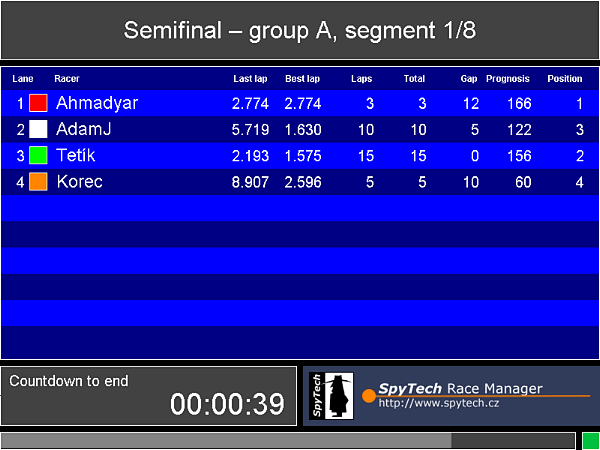
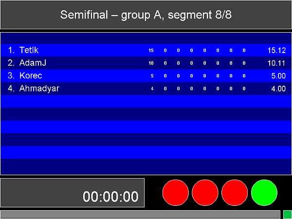

You may refedine the group distribution before you begin to measure the segments of the race part. See the chapter Groups for how to do so.
After your groups are defined in the way you require, select the command Start measurement in the Race menu. The measurement is performed group by group. After the first group of the race part is done with measurement, the program returns to the main application window. The measurement of the next group is started by issuing the same command again. A special result sheet is created for each group measrured. The measurement of each group goes like this: (See Qualification measurement chapter for meaning of symbols.)
First, the title screen of the next race part is shown. Press the ENTER key to continue. Then, the initial lane assignment dialog window is shown. In this moment you may specify which lane each racer should be assigned to in their first segment of this race part. Press OK button to confirm your settings.
Then, then main race display screen is shown.
The name of the part, letter of the group and the current segment number is shown in the title area of the screen. Under that, the list of racers if the group is shown. Each line represents one racer. The following data are shown:
Press the ENTER to initiate the warm-up. The warm-up takes the time specified in the race part or it might be shortened up by pressing the A letter key if its full duration is not required by the racers.
After the warm-up ends, you may press the ENTER key again to begin the five second timer (ended by start lights and beep) and then the measurement of the first segment begins.
The SPACE bar allows you to pause the segment. The power supply is shut down but the stopwatch runs for 1.5 second more so that the sensors passed through by cars driven by motion inertia might get properly counted. Press SPACE bar again to resume the segment. Short start signals and beeps are produced. The segment takes the time specified in the race system.
If there is more racers than lanes, the warm-up is started again so that 9th racer who was on pause in the previous segment may warm-up their car. After the warm-up, another five second countdown is kept and the the second segment takes place. Another warm-up is started after the second segment, if there is 10 races in group in total.
If there is no warm-up needed, the pause follows each segment. It also takes the time defined by the race system.
The last segment is followed by a dialog window that prompts you to specify at how many track segments each car stopped at. Press the Confirm button to conform the settings. In this place, you may specify also the penalty points for each racer.
Then, the group results are shown and the program waits for the ENTER key to be pressed in order to return to the main application window.
After the last group has been measured and the main window appears back, you are asked whether the data were measured correctly. If they were, you may answer Yes. If there were some problems during the measurement and the group results or whole race part results should be discarded, answer No. You may then either perform the race reset and measure certain part of the race again, or you may enter the result editor, whose usage is self explanatory. Command Results editor in menu Race.